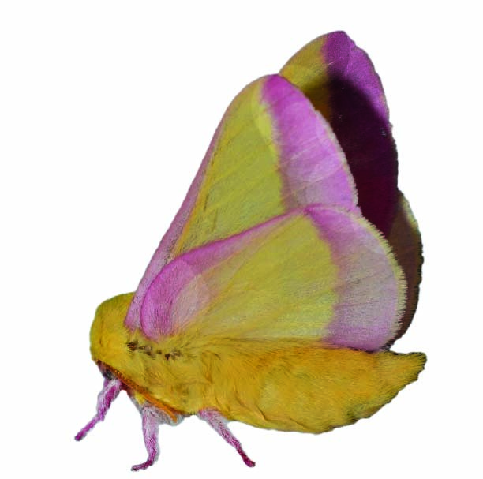
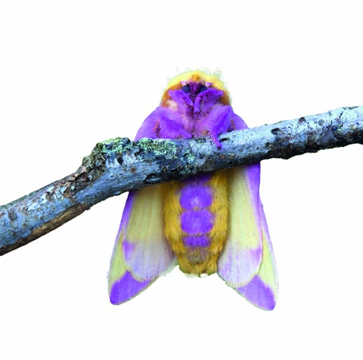
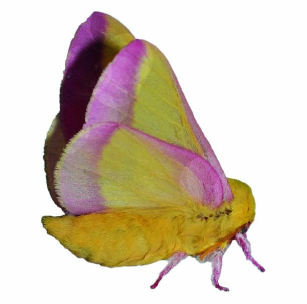

La Rosy Maple combina un rosa suave con amarillo brillante en un diseño que parece creado por un artista. Su cuerpo lanudo y sus alas pequeñas le dan un aspecto delicado, casi onírico. Esta estética también cumple una función: mimetizarse entre los arces, donde vive y deposita sus huevos, protegida por su discreta elegancia.

Como adulta, la Rosy Maple vive apenas unos días. No posee boca funcional ni se alimenta: su breve existencia está dedicada a la reproducción. Durante el día permanece oculta, y por la noche es atraída por la luz artificial, apareciendo fugazmente en muros o ventanas suburbanas como un guiño silencioso de la naturaleza.

No todas las criaturas buscan ser vistas. La Rosy Maple es un recordatorio de que lo sutil también es poderoso. No necesita colores intensos ni vuelos ruidosos: basta su presencia serena para marcar una diferencia. Es una joya discreta del mundo de los lepidópteros, efímera y encantadora.